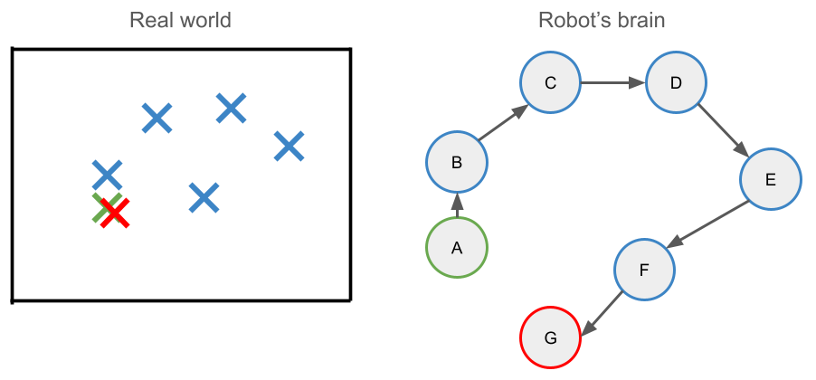
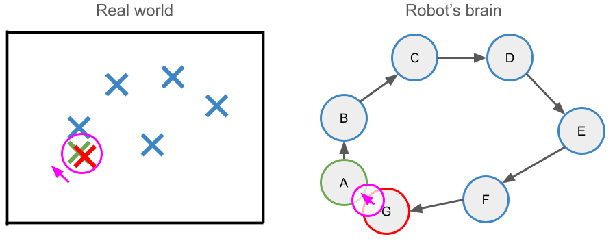

Our SLAM system uses LiDAR information, and a data structure called a "pose graph" to iteratively build a map of an unknown environment. We also employ a process called "loop closure detection" to correct errors in sensor measurements, by recognizing when the robot has returned to a location it has previously visited. We bring all these pieces together into a single system that runs in realtime on a TurtleBot4. When the system is run, the robot generates a 2D grid map of its enviroment (see results below for more).
LiDAR detectors on the robot give us 2D scans of the robot's environment (the points on the right in the image below shows what this data looks like). Our general mapping approach is to drive the robot around an environment, taking many LiDAR scans (approximately one scan every time the robot moves more than 5cm). Using odometry sensors (wheel rotation sensors that calculate how far the robot has moved), we can then "draw" each LiDAR scan on a "canvas", centered around where the robot thinks it was when it took that scan. The result is a map, consisting of many many points (from the many many LiDAR scans).
Under the hood, the robot maintains a graph whose vertices represent discrete robot locations over time (this is functionally equivalent to this idea of drawing all the LiDAR scans on a canvas). As we explain in the following secetion, this graph is constantly updated and optimized as the robot drives around.

As our robot moves around, the map it buidls accumulates error because the odometry sensors are not 100% accurate. We call this problem "drift." To combat drift, we need for our robot to be able to detect when its internal pose graph is inaccurate. We do this by comparing the LiDAR scans of poses in a process called point cloud registration. This process allows for the robot to derive the relative difference in poses between the scans. Then, the robot can introduce this information into its pose graph -- essentially accounting for sensor inaccuracies. Put in very simple terms, the robot can detect how much error it accumulated while moving around, and re-evaluate the actual pose.
After the corrected pose information is added to the graph, we use a process called graph optimization (specifcally Gauss-Newton optimization) to update the graph. Graph optmization -- on a very high level -- moves all of the nodes and edges in the pose graph around to account for all of the robots observations about its enviroment (both from odometry and point cloud registration).


To review, our sytem does three things constantly: (1) maps and localizes, (2) detects errors in the map it's making and (3) corrects those errors (when possible).
Here's what it looks like running our SLAM implementation in real time on a TurtleBot4, as we drove it around Carleton College's Computer Science Deparment (in the 3rd floor of Olin Hall)
.When it's time to create a final map, we draw a grid over the accumulated LiDAR scan points. We initalize all cells as "empty". If there are enough points in any one cell, we update that cell to "occupied". The resulting grid is what we call an "occupancy grid", and functions as the final map our SLAM system outputs.